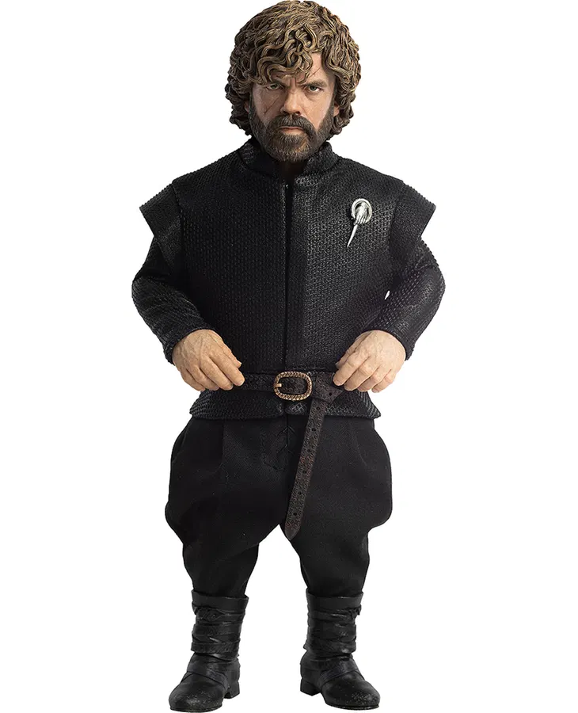

Peter Dinklage is an acclaimed American actor best known for his role as Tyrion Lannister in HBO’s Game of Thrones, a performance that earned him multiple Emmy Awards and a Golden Globe. Born on June 11, 1969, Dinklage has built an impressive career, refusing to be limited by his achondroplasia, a form of dwarfism. His breakthrough role came in The Station Agent (2003), and he has since appeared in films such as X-Men: Days of Future Past, Three Billboards Outside Ebbing, Missouri, and Cyrano. Beyond acting, he is an advocate for equal representation in Hollywood, using his platform to challenge stereotypes. With his commanding screen presence, sharp wit, and deep emotional range, Dinklage has established himself as one of the most respected actors in the industry.
